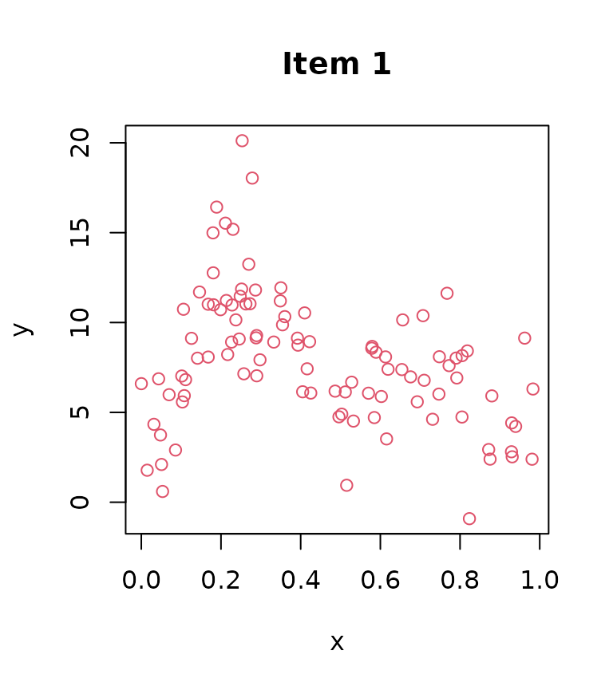
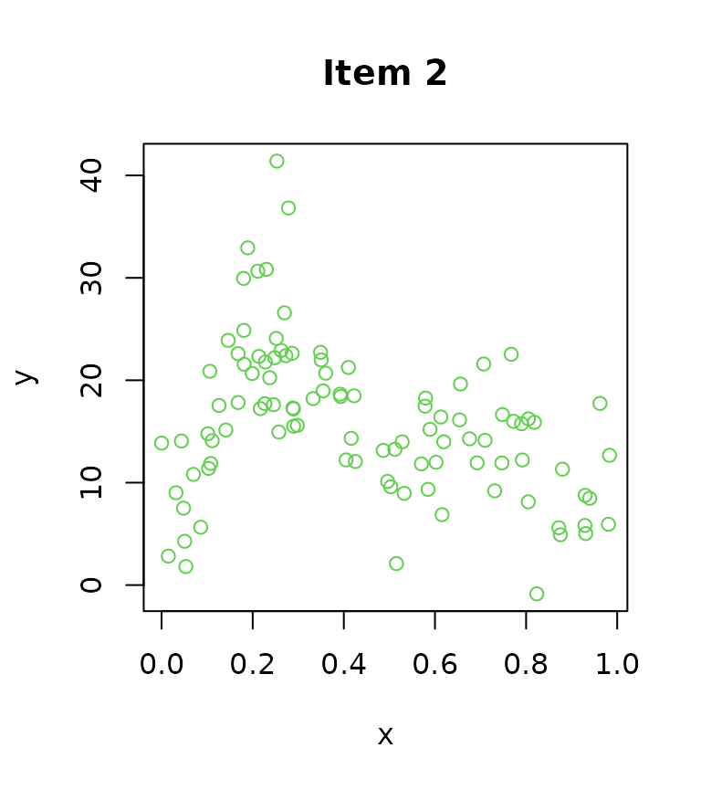
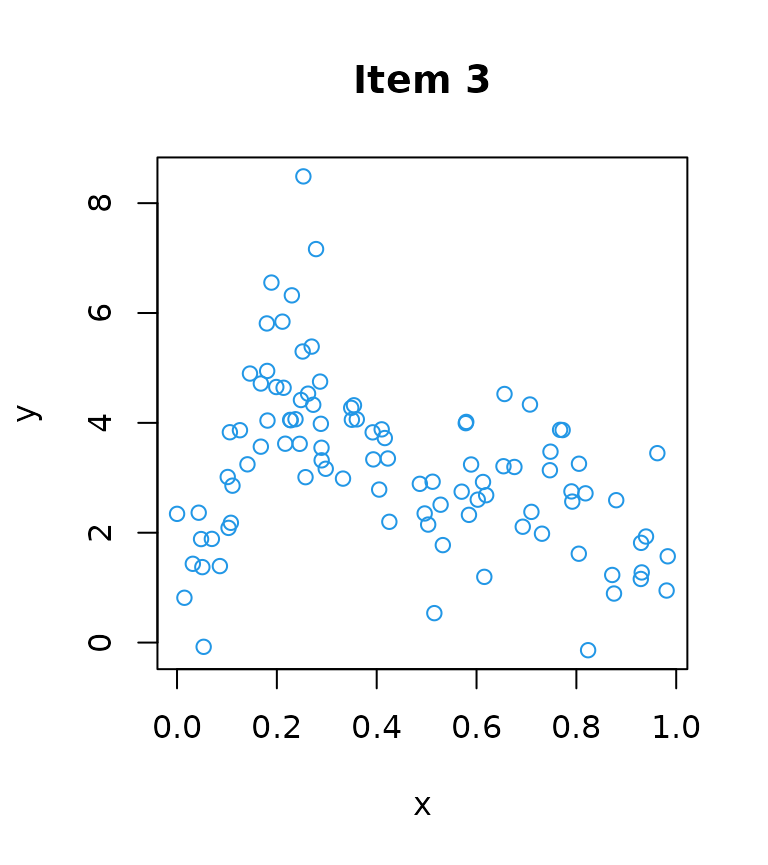

Introduction
Introduction.RmdThe galamm packages estimates generalized additive
latent and mixed models (GALAMMs). GALAMMs are described in Sørensen, Fjell, and Walhovd (2021) as an
extension of generalized linear latent and mixed models (GLLAMMs) (Rabe-Hesketh, Skrondal, and Pickles 2004). If
you don’t need nonlinear smooth terms, you should probably use the PLmixed package
instead.
Fitting a latent response model
In this vignette we illustrate a basic use case with the simulated
dataset dat1 which is part of the package.
head(dat1)
#> id item y x
#> 1 1 item1 4.516161 0.5324675
#> 2 1 item2 8.955929 0.5324675
#> 3 1 item3 1.774563 0.5324675
#> 4 2 item1 10.144956 0.6560528
#> 5 2 item2 19.633269 0.6560528
#> 6 2 item3 4.525468 0.6560528The dataset illustrates measurements of a latent response variable. The variables are
-
id: an identifier for the study subjects. -
item: an identifier for one of three items which measure an underlying latent trait of interest. -
y: the measurement of the given item. -
x: a predictor variable.
The plot below shows the measurements of each item.
sdat <- split(dat1, f = dat1$item)
for(i in seq_along(sdat)){
plot(sdat[[i]]$x, sdat[[i]]$y, col = i + 1,
xlab = "x", ylab = "y",
main = paste("Item", i))
}
Model definition
Letting \(y_{ij}\) denotes the \(i\)th measurement of the \(j\)th subject, we assume the measurement part
\[y_{ij} = \beta_{0} + \eta_{j} \boldsymbol{\lambda}^{T} \boldsymbol{\delta}_{ij} + \epsilon_{ij}\]
where \(\boldsymbol{\delta}_{ij}\) is a vector whose \(k\)th element equals 1 if the \(i\)th measurement of the \(j\)th subject is a measurement of item \(k\), and \(\boldsymbol{\lambda} = (1, \lambda_{2}, \lambda_{3})^{T}\) is a vector of factor loadings, whose first element is set to 1 for identifiability. Furthermore, \(\eta_{j}\) denotes a latent variable for subject \(j\), assumed identical across all three items, and \(\epsilon_{ij} \sim N(0, \sigma^{2})\) is the residual term.
Next, the structural part relates the latent variables to the predictor variables,
\[\eta_{j} = f(x_{j}) + \zeta_{j}\]
where \(x_{j}\) is a predictor variable for subject \(j\) which does not vary within subjects, and \(\zeta_{j} \sim N(0, \psi)\) is a disturbance term (random intercept).
Plugging the structural model into the measurement model yields the reduced form
\[y_{ij} = \beta_{0} + f(x_{j}) \boldsymbol{\lambda}^{T} \boldsymbol{\delta}_{ij} + \zeta_{j} \boldsymbol{\lambda}^{T} \boldsymbol{\delta}_{ij} + \epsilon_{ij}\]
At fixed values of \(\boldsymbol{\lambda}\), the reduced form
defines a generalized additive mixed model (GAMM) (Wood 2017) with varying coefficient term \(f(x_{j}) \boldsymbol{\lambda}^{T}
\boldsymbol{\delta}_{ij}\) and random effect term \(\zeta_{j} \boldsymbol{\lambda}^{T}
\boldsymbol{\delta}_{ij}\). Identifying this lets us use profile
likelihood estimation similar to what Jeon and
Rabe-Hesketh (2012) proposed for a subset of GLLAMMs, and Rockwood and Jeon (2019) implemented in the R
package PLmixed. The current implementation in
galamm uses this profile likelihood algorithm, extended to
smooth nonlinear functions.
Profile likelihood estimation with galamm
We start by defining that loading matrix, using the same syntax as
PLmixed. NA means that the loading is free to
be estimated, whereas a value means that we fix the corresponding
loading.
load.mat <- matrix(c(1, NA, NA), ncol = 1)
dimnames(load.mat) <- list(c("item1", "item2", "item3"), NULL)
load.mat
#> [,1]
#> item1 1
#> item2 NA
#> item3 NAWe then fit the model. We set the initial values
lambda_init = c(2, .4) to speed up convergence in this
example case. If initial values are not provided, random starting points
are used instead.
mod <- galamm(
formula = y ~ s(x, by = weight),
random = ~(0 + weight|id),
data = dat1,
load_var = "item",
lambda = load.mat,
factor = "weight",
lambda_init = c(2, .4)
)NB! The model as set up will as set up is not identified if all \(\lambda\) are equal, since the term
s(x, by = weight) also contains a constant component. This
problem can be fixed by using the mixed model representation described
in the vignette on maximum likelihood estimation.
Inspecting the model
We can plot the estimated smooth function with corresponding 95 % confidence bands. The confidence bands take uncertainty in the factor loadings into account.
plot(mod)The function for objects takes any arguments that can be provided to ’s function. For example, we can get shaded confidence bands and remove the rug and add more informative labels and titles.
plot(mod, rug = FALSE, shade = TRUE, ylab = "latent variable",
xlab = "predictor", main = "Estimated smooth function")
We can also print some summary information.
summary(mod)
#> Generalized additive latent and mixed model fit with profile likelihood
#> Formula: y ~ s(x, by = weight)
#> Family: gaussian ( identity )
#>
#> AIC BIC logLik deviance df.resid
#> 781.31 807.23 -383.65 767.31 292
#>
#> Scaled residuals:
#> Min 1Q Median 3Q Max
#> -3.07552 -0.49018 0.01068 0.51409 2.57879
#>
#> Lambda: item
#> [,1]
#> item1 1.0000
#> item2 2.0126
#> item3 0.3977
#>
#> Random effects:
#> Groups Name Variance Std.Dev.
#> id weight 6.47172 2.5440
#> Xr s(x):weight 557.95153 23.6210
#> Residual 0.09887 0.3144
#> Number of obs: 300, groups: id, 100; Xr, 8
#>
#> Fixed effects:
#> Beta SE
#> (Intercept) 0.08537 0.0846
#>
#> Optim Iterations: 7